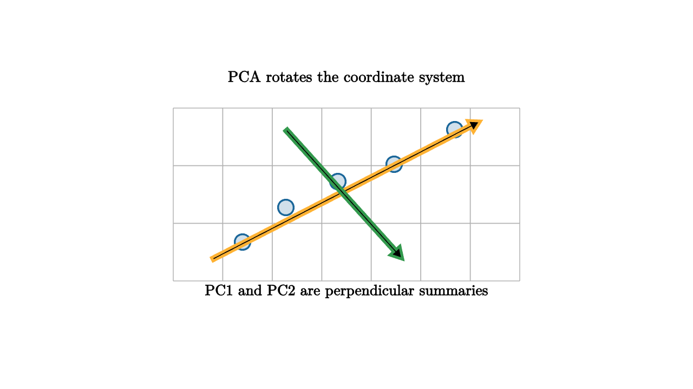

Principal component analysis begins with centering. Subtract the column means so that the origin means "average case." Then find orthogonal directions along which the centered cloud varies the most. PCA is therefore a coordinate choice: it rotates the data to show the strongest axes of variation first.

source
let soft = |col, amount| lerp(WHITE, col, amount)
mesh pca = [
center{1.35u} Text("PCA rotates the coordinate system", 0.64),
stroke{LIGHT_GRAY, 1} LineGrid([-2, 2, 8], [-1, 1, 4], 1),
center{1.2l + 0.55d} fill{soft(BLUE, 0.2)} stroke{BLUE, 2} Circle(0.09),
center{0.7l + 0.15d} fill{soft(BLUE, 0.2)} stroke{BLUE, 2} Circle(0.09),
center{0.1l + 0.15u} fill{soft(BLUE, 0.2)} stroke{BLUE, 2} Circle(0.09),
center{0.55r + 0.35u} fill{soft(BLUE, 0.2)} stroke{BLUE, 2} Circle(0.09),
center{1.25r + 0.75u} fill{soft(BLUE, 0.2)} stroke{BLUE, 2} Circle(0.09),
stroke{ORANGE, 3} Arrow(1.55l + 0.75d, 1.55r + 0.85u),
stroke{GREEN, 3} Arrow(0.7l + 0.75u, 0.65r + 0.75d),
center{1.12d} Text("PC1 and PC2 are perpendicular summaries", 0.62)
]PCA can be computed from the covariance matrix or from the SVD of the centered data matrix. Those views are equivalent in the standard setup. The covariance view emphasizes variance along directions. The SVD view emphasizes low-rank reconstruction and singular values. Both teach the same lesson: data can contain correlated variation that looks simpler after rotation.
If $X$ is the centered data matrix, the sample covariance matrix is proportional to
The principal components are eigenvectors of this covariance matrix. The first component solves the optimization problem
That statement is worth reading slowly. PCA is not searching for a direction that predicts an outcome. It is searching for a direction along which the data itself spreads out the most.
Interpretation requires care. A principal component is a weighted blend of original variables. Sometimes the first component has a clear story, such as overall size, overall wealth, or total brightness. Sometimes it mixes several effects that happen to co-vary in one sample. PCA gives directions that are mathematically optimal for variance, not automatically meaningful for policy, diagnosis, or explanation.
source
let soft = |col, amount| lerp(WHITE, col, amount)
"Centered"
mesh cloud = [
center{1.35u} Text("subtract the average first", 0.62),
stroke{LIGHT_GRAY, 1} LineGrid([-2, 2, 8], [-1, 1, 4], 1),
center{0r} fill{soft(ORANGE, 0.22)} stroke{ORANGE, 2} Circle(0.12),
center{1.0l + 0.35d} fill{soft(BLUE, 0.2)} stroke{BLUE, 2} Circle(0.09),
center{0.35l + 0.15d} fill{soft(BLUE, 0.2)} stroke{BLUE, 2} Circle(0.09),
center{0.25r + 0.15u} fill{soft(BLUE, 0.2)} stroke{BLUE, 2} Circle(0.09),
center{0.95r + 0.45u} fill{soft(BLUE, 0.2)} stroke{BLUE, 2} Circle(0.09)
]
play Fade(0.7)
"Rotate"
mesh axes = [
stroke{ORANGE, 3} Arrow(1.5l + 0.65d, 1.5r + 0.75u),
stroke{GREEN, 3} Arrow(0.65l + 0.8u, 0.65r + 0.8d),
center{1.1d} Text("largest variance direction comes first", 0.62)
]
play Write(0.9)
"Compress"
axes = [
stroke{ORANGE, 3} Arrow(1.5l + 0.65d, 1.5r + 0.75u),
center{1.1d} Text("drop PC2 only when the residual is acceptable", 0.62)
]
play Trans(0.8)A good PCA lesson ends with a practical checklist. Center the data. Scale variables if units make variances incomparable. Inspect component loadings. Plot residuals. Ask whether the directions answer the substantive question. PCA is powerful because it is simple, and that simplicity deserves supervision.
The lesson to keep: PCA is a rotation chosen by variance. It can reveal low-dimensional structure, compress a table, and make a cloud easier to plot. It also inherits every choice made before it, especially centering, scaling, and feature selection. The geometry is clean, while the interpretation remains a modeling responsibility.